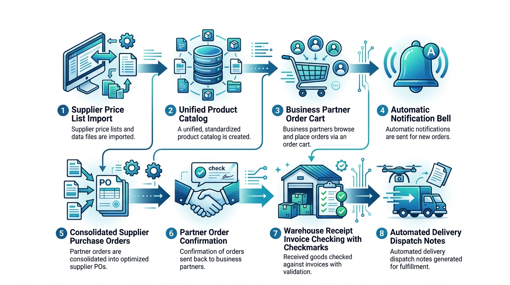

Rosario Compras - Walkthrough del Circuito Operativo
Documentación técnica y funcional del circuito de abastecimiento, compras agrupadas, validación de stock y reparto automático.
1. Infografía Visual del Circuito (8 Pasos)

Flujo integral de 8 pasos: desde la lista del proveedor hasta el reparto final a cada socio.
2. Diagrama de Secuencia
sequenceDiagram
autonumber
actor Prov as Proveedor
actor Ejec as Ejecutivo / Admin
actor Socio as Socio (Business Partner)
Prov->>Ejec: 1. Envía lista de precios (.xlsx / .csv)
Ejec->>Ejec: 2. Importa y consolida en Catálogo Único
Socio->>Socio: 3. Consulta catálogo, filtra por Proveedor y Carga Pedido
Socio->>Ejec: 4. Notificación automática 🔔 (Nuevo Pedido registrado)
Ejec->>Ejec: 5. Consolida pedidos y Exporta Órdenes por Proveedor (.xlsx)
Ejec->>Socio: 6. Notificación automática 🔔 (Pedido consolidado y enviado al proveedor)
Prov->>Ejec: Entrega mercadería con Factura / Remito
Ejec->>Ejec: 7. Registra Comprobante con doble control: Precios y Cantidades
Ejec->>Ejec: 8. Ejecuta Reparto Automático y genera Remitos
Ejec->>Socio: Notificación automática 🔔 (Remito generado y listo para entrega)
3. Detalle de los 8 Pasos Operativos
Paso 1
Recepción de Listas de Precios
Proveedor
El proveedor envía su planilla de artículos y listas de precios en formato Excel (.xlsx) o CSV.
Paso 2
Importación y Consolidación de Catálogo
Ejecutivo / Admin
El ejecutivo selecciona el proveedor, previsualiza los datos e importa automáticamente los artículos y precios negociados en la base de datos (ARTICULOS y PRECIOS_NEGOCIADOS).
Paso 3
Carga Digital de Pedido con Filtro por Proveedor
Socio
El socio accede a su catálogo, filtra por proveedor o consulta todos los productos, y carga las cantidades en su carrito persistente.
Paso 4
Notificación Automática de Pedido
Socio ➔ Ejecutivo
Al confirmar el pedido, el sistema dispara automáticamente una notificación al panel del ejecutivo de cuentas avisando del nuevo pedido registrado.
Paso 5
Consolidación y Exportación por Proveedor
Ejecutivo / Admin
El ejecutivo visualiza la demanda total agregada y exporta Órdenes de Compra en planillas de Excel independientes para cada proveedor involucrado.
Paso 6
Notificación de Envío al Proveedor
Ejecutivo ➔ Socio
Al confirmar la consolidación, cada socio recibe una notificación automática indicando: "Tu Pedido #X fue consolidado y enviado al proveedor para su preparación".
Paso 7
Registro de Comprobante con Doble Control (Compras y Logística)
Ejecutivo / Admin
Llega la mercadería física. Se asienta la Factura/Remito en COMPROBANTES_PROVEEDOR y DETALLE_COMPROBANTES_PROVEEDOR, controlando precios facturados vs pactados y cantidades físicas recibidas vs solicitadas, actualizando el stock real.
Paso 8
Reparto Automático, Prorrateo y Remitos
Ejecutivo / Admin
El sistema calcula el prorrateo equitativo si hubo faltantes en la entrega del proveedor, emite los remitos oficiales de entrega y notifica a cada socio con su remito listo.
4. Resultados de la Verificación Automatizada (8/8 Tests OK)
=== INICIANDO PRUEBAS DEL CIRCUITO COMPLETO ===
[OK] Test 1: Autenticación correcta para Admin, Ejecutivo y Socios.
[OK] Test 2: Importación de lista de proveedor y consolidación en catálogo único.
[OK] Test 3: Socio 1 registró Pedido #4 eligiendo productos por proveedor.
[OK] Test 4: Notificación automática generada para el Ejecutivo de Cuentas.
[OK] Test 5: Exportación de Órdenes de Compra segmentadas por Proveedor (.xlsx).
[OK] Test 6: 4 pedidos consolidados y notificación enviada al Socio ('enviado al proveedor').
[OK] Test 7: Comprobante de proveedor #1 registrado con doble control y stock actualizado.
[OK] Test 8: Reparto automático ejecutado, remitos generados con prorrateo y notificaciones emitidas.
=== ¡CIRCUITO COMPLETO DE 8 PASOS VERIFICADO CON ÉXITO (8/8 PRUEBAS OK)! ===
5. Credenciales de Acceso para Pruebas
| Rol |
Nombre |
Email |
Contraseña |
| admin |
Administrador General |
admin@rosariocompras.com |
admin123 |
| ejecutivo |
Ejecutivo de Cuentas |
ejecutivo@rosariocompras.com |
account123 |
| socio |
Café Central (Socio 1) |
socio1@rosariocompras.com |
socio123 |
| socio |
Panadería La Rosa (Socio 2) |
socio2@rosariocompras.com |
socio123 |